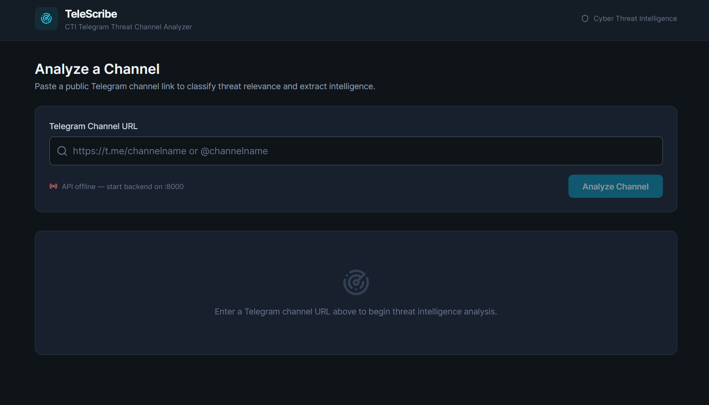
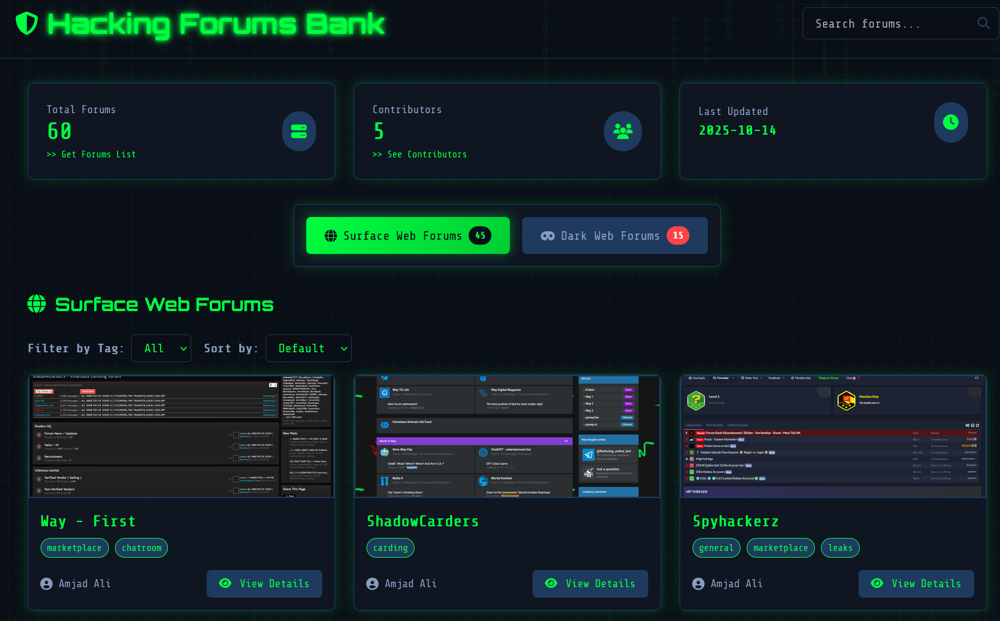
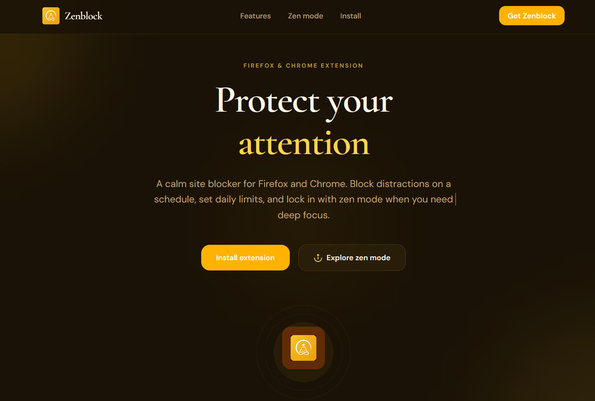
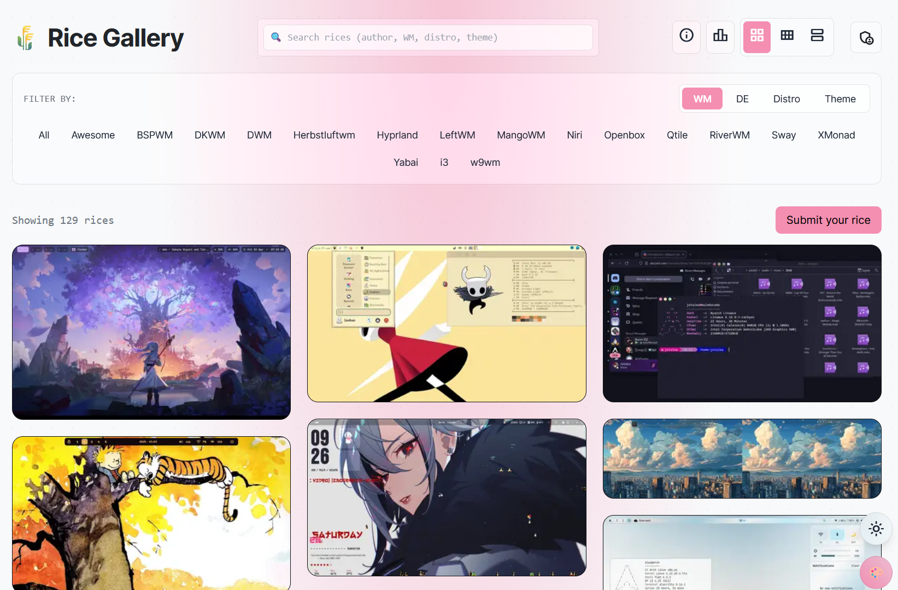

Get To Know
About Me
Reports
80+ DeliveredProjects
4+ BuiltCybersecurity professional with 3+ years of experience in Cyber Threat Intelligence, Digital Risk Protection, and Attack Surface Management. Experienced in dark web investigations, phishing detection, OSINT and HUMINT operations, internet-scale security research, and threat intelligence automation.
Built a money mule identification system that collected 100,000+ threat actor data points, helping government and financial institutions close nearly 90% of first-hop mule accounts within a day of creation. Authored the standard operating procedures for persona management and brand-impersonation investigations now used team-wide. Currently a Threat Intelligence Lead at Redhunt Labs, focused on DRP, phishing detection engineering, and AI security research.
Let's TalkSelected highlights
Notable Works
Money Mule & Financial Fraud Intelligence
Investigated large-scale investment scams, betting platforms, and money mule networks across India and Southeast Asia using OSINT, HUMINT, and fraud intelligence techniques. Built a money mule identification system that collected and analyzed 100,000+ threat actor data points, helping government agencies and financial institutions close nearly 90% of first-hop mule accounts within a day of creation.
Read moreMoney Mule & Financial Fraud Intelligence
Investigated large-scale investment scams, betting platforms, and money mule networks across India and Southeast Asia using OSINT, HUMINT, and fraud intelligence techniques. Built a money mule identification system that collected and analyzed 100,000+ threat actor data points, helping government agencies and financial institutions close nearly 90% of first-hop mule accounts within a day of creation.
Dark Web & Threat Actor Investigations
Conducted investigations across dark web forums, underground marketplaces, ransomware leak sites, and Telegram communities to identify threat actors, emerging cybercrime trends, and malicious infrastructure. Utilized sock-puppet operations and OPSEC-driven intelligence collection, mapping adversary TTPs to the MITRE ATT&CK framework and conducting cybercrime ecosystem mapping, producing 80+ actionable intelligence reports.
Public Sector Cybercrime Response Platform
As a personal initiative, designed and deployed a complaint management workflow for a local cybercrime unit to streamline the handling of hundreds of citizen reports received daily. By integrating WhatsApp-based intake, structured complaint collection, and centralized case tracking, the system reduced manual workload by approximately 75%, improved response efficiency, and enabled investigators to manage and prioritize cases more effectively.
Digital Risk Protection & Brand Protection Intelligence
Delivered Digital Risk Protection (DRP) assessments for enterprise and government clients across India and Southeast Asia. Investigated phishing campaigns, brand impersonation, executive impersonation, malicious mobile applications, credential leaks, dark web exposure, and social media abuse — including 2,000+ SEO-poisoned government (.gov.in) pages and 10,000+ fraudulent bank customer-care numbers distributed via YouTube. Authored the team's standard operating procedures for persona management and brand-impersonation investigations, and contributed to the DRP product roadmap.
Internet-Scale Security Research
Built an internet-scale scanning infrastructure capable of scanning the global IPv4 HTTPS attack surface in under 28 hours. Also built an automated phishing and typosquatting detection system that discovers brand look-alike domains and forensically scores them for risk, replacing manual domain hunting with faster, explainable takedown decisions.
Crypto On-Chain Analysis
As an independent researcher, unaffiliated with any employer, tracked illicit services operating on the dark web — including carding platforms and child-exploitation (CSAM) infrastructure — and conducted cryptocurrency and blockchain transaction tracing (on-chain analysis) to follow illicit fund flows linked to identified threat actors.
Hacktivist & Disinformation Network Tracking
As an independent initiative, collaborated with fellow OSINT researchers to track coordinated hacktivist collectives and disinformation campaigns across Telegram and social platforms during a period of regional geopolitical conflict, profiling propaganda dissemination channels and cross-platform attack infrastructure.
Where I've Worked
Professional Experience
Redhunt Labs
May 2025 – July 2026 · RemoteThreat Intelligence Lead
- DRP assessments for enterprise clients across India and Southeast Asia — phishing, brand abuse, dark web exposure, and executive impersonation.
- Authored the team's SOPs for sock-puppet/persona management and brand-impersonation investigations, standardizing OPSEC practices across the CTI team.
- Built an automated phishing detection system that discovers brand look-alike domains and forensically scores them for takedown.
- Built internet-scale scanning on AWS and Terraform, covering the global IPv4 HTTPS attack surface in under 28 hours.
- Designed Telegram intelligence architecture — channel onboarding, keyword monitoring, threat-actor tracking.
Saptang Labs
Jan 2023 – May 2025 · IIT MRP, IndiaCyber Threat Intelligence Analyst
- Built a money mule identification system that collected 100,000+ threat actor data points, helping close nearly 90% of first-hop mule accounts within a day of creation.
- Led OSINT, HUMINT, and social engineering investigations across financial scams — crypto, lottery/gambling, and money mule networks.
- Monitored 20+ underground forums and Telegram channels, mapping TTPs to MITRE ATT&CK and producing 80+ intelligence reports.
- Detected phishing sites, cloned APKs, and impersonation campaigns — including 2,000+ SEO-poisoned .gov.in pages and 10,000+ fraudulent customer-care numbers on YouTube.
- Supported law enforcement and regulatory investigations into financial fraud, terrorist funding, and extremist networks.
- Shipped an MVP in under two weeks with 10,000+ threat indicators for pilot validation.
What Skills I Have
My Experience
Threat Intelligence
OSINT & HUMINT
ExperiencedDark Web Intelligence
ExperiencedDigital Risk Protection
ExperiencedThreat Hunting
ExperiencedBrand Monitoring
ExperiencedAttack Surface Management
ExperiencedMITRE ATT&CK Framework
ExperiencedFraud & Financial Crime Intelligence
ExperiencedTechnology & Tools
Python
ExperiencedAWS / Terraform / Docker
ExperiencedShodan / Censys
ExperiencedVirusTotal / URLScan.io
ExperiencedSecurityTrails / FOFA
ExperiencedMaltego / Google Dorking
ExperiencedBurp Suite / Wireshark
IntermediateMongoDB / Selenium / Celery
ExperiencedWhat I Know
Learning and Achievement
Education
-
B.Tech - Computer Science and Business Systems
-
Sri Eshwar College of Engineering, 2021–2025
-
CGPA 8.61
Certifications
-
(ISC)² Certified in Cybersecurity
-
ArcX Foundation Threat Intelligence Analyst — Dec 2024
Achievements
-
CTFs & hackathons with team NandBytes
-
Cybersecurity blogs on Medium — OSINT & CVEs
-
Co-authored the Payment Gateway Security Handbook
-
Smart Hack Challenge Winner 2022
-
Rajya Puraskar Award 2019
My Recent Projects
Portfolio

Telescribe — Telegram Channel Analyzer
Builds an OSINT relationship map between Telegram channels by extracting shared t.me links from channel messages, plus AI-classifies threat relevance and surfaces IOCs for fast CTI triage.

Forums Bank — OSINT Intelligence Repository
Curated repository of cybercrime forums, marketplaces, and underground communities — organized and searchable for faster threat research and dark web investigations. Contributed multiple dark web forums to expand its coverage.
Fun Projects

Zenblock — Firefox & Chrome Extension
Distraction-blocking browser extension for website blocking, daily time limits, and scheduled access controls — with category-based filtering, focus mode, customizable block pages, and usage tracking.

Linux Rice Catalogue — React
Community-driven platform for discovering and sharing Linux desktop customizations across distributions, themes, and window managers — with search, submissions, screenshot galleries, and authentication workflows.